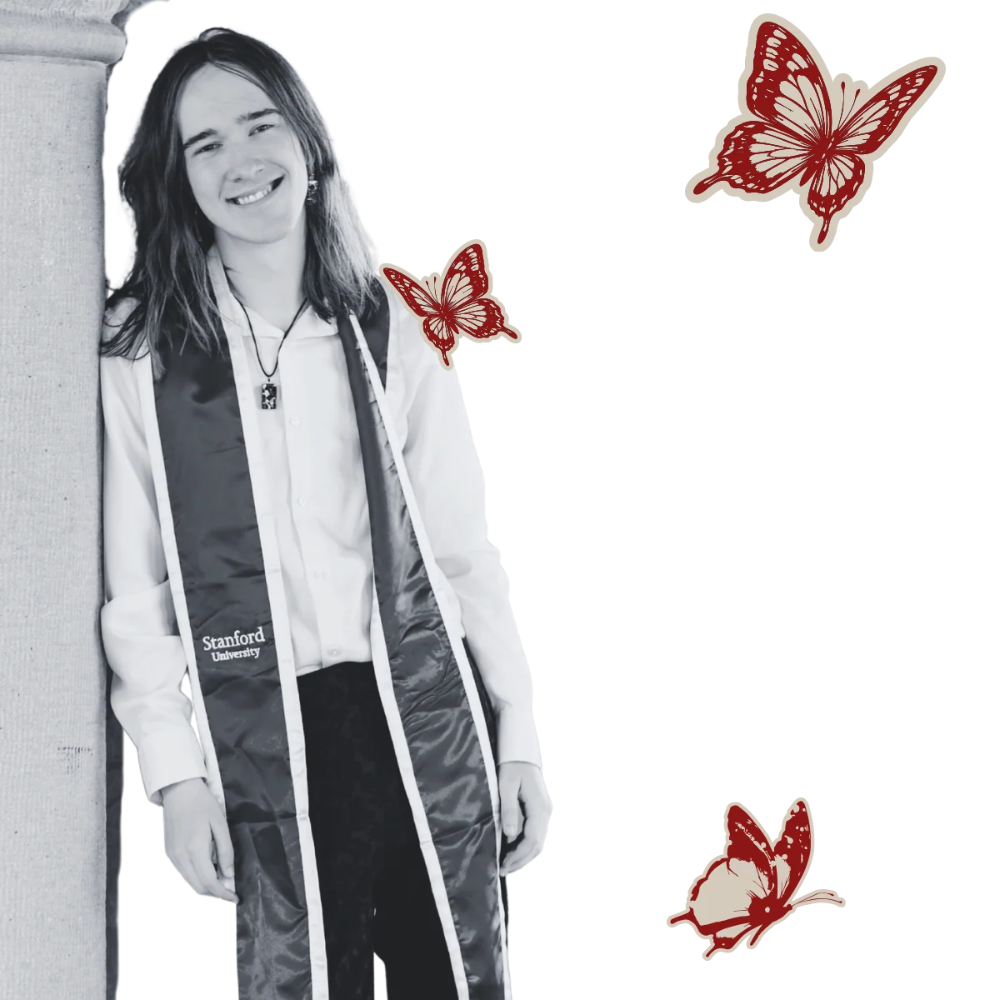
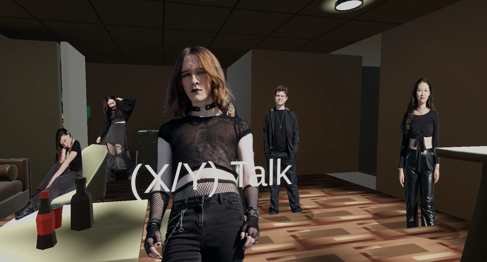

honors thesis
VR study at Stanford VHIL focusing on the impact of spatiality and environmental immersion on group communication.
I’m a recent Stanford Symbolic Systems Honors graduate ('26) with a concentration in Human-Computer Interaction. My work spans research, creative media, and software.

VR study at Stanford VHIL focusing on the impact of spatiality and environmental immersion on group communication.

Narrative virtual reality experience exploring the psychological, emotional, and social consequences of collegiate alcohol abuse, featuring immersive spatial sound and perception-altering shaders.

Mobile app that brings local volunteering opportunities into one place.

Mobile assistant that helps teachers grade assignments, draft personalized feedback, and track student progress over time.

New visual and brand identity for Stanford's award-winning rock and experimental a cappella group.

Browser-based adventure game about a wood lemming braving habitat loss to save their partner.
Browser-based adventure game about a wood lemming braving habitat loss to save their partner.